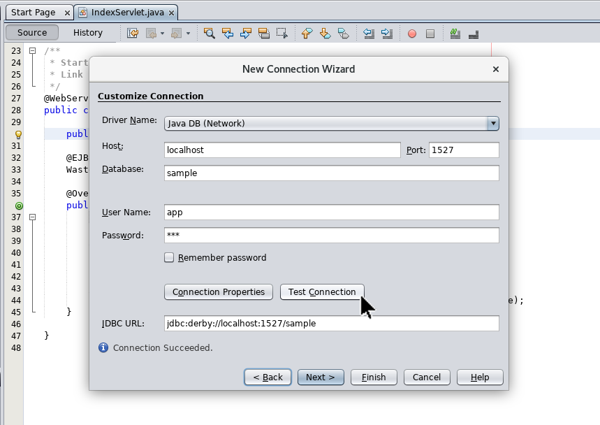
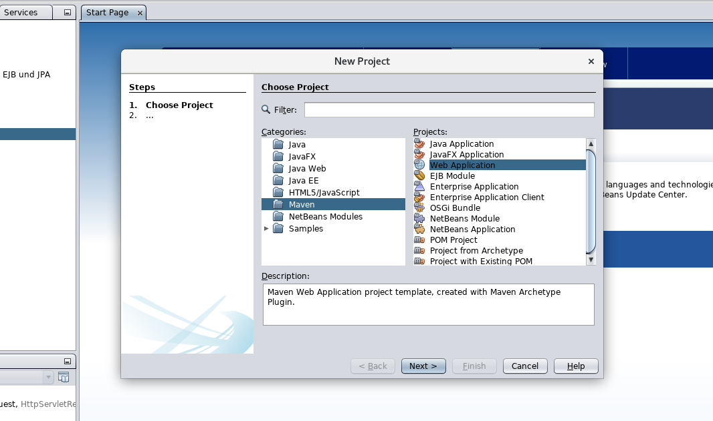
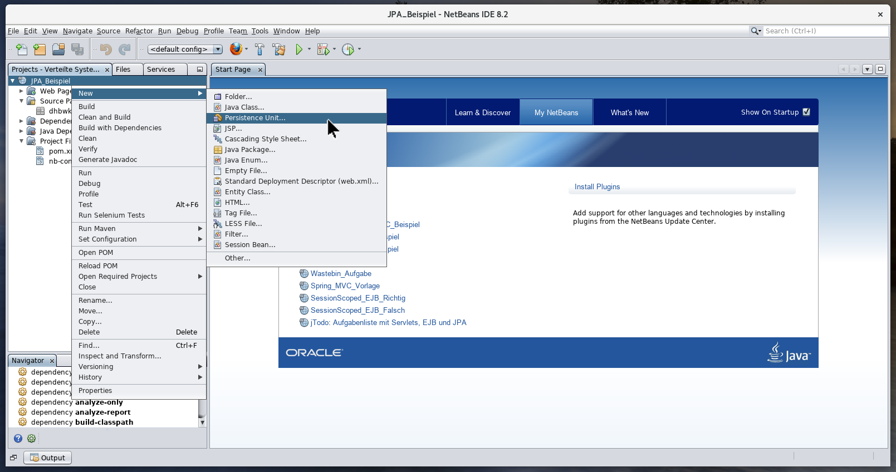
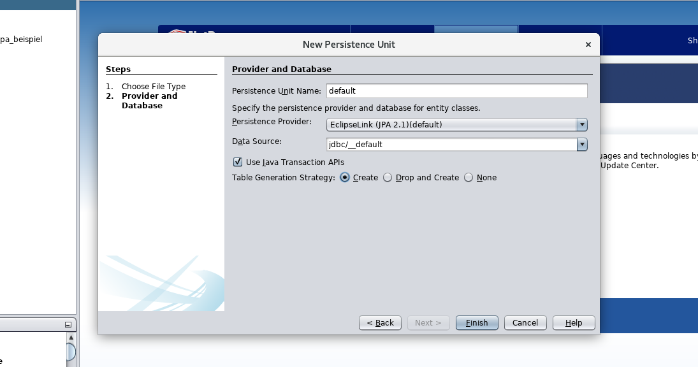
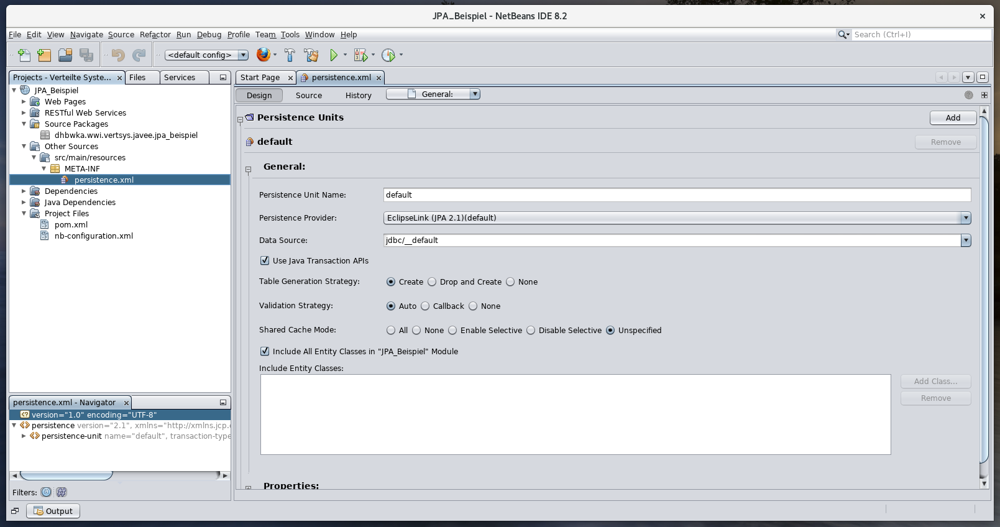
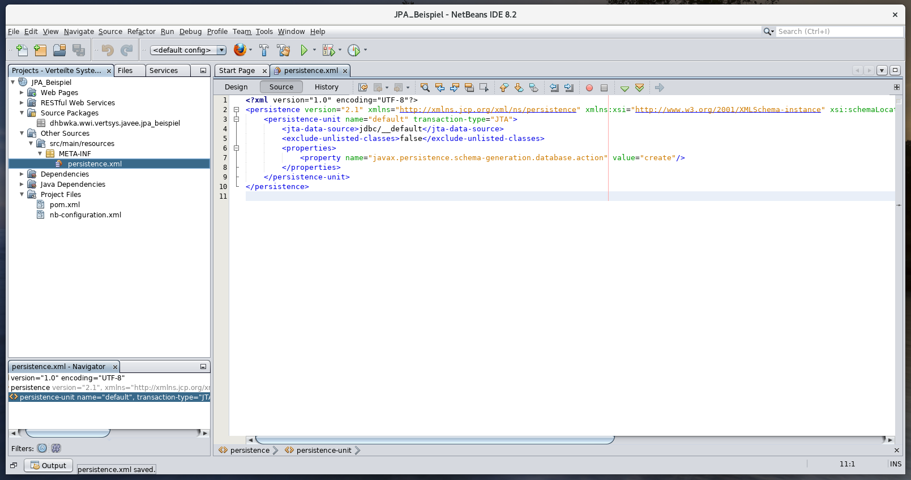

Das klappt ja schon ganz gut mit Java EE und MVC, wir haben sogar schon
eigene Webseiten mit Datenbank im Hintergrund geschrieben. Die schönsten Sachen
haben wir aber noch gar nicht gesehen. Hier lernst du nun, deine eigenen
Persistence Entities und Enterprise Java Beans zu schreiben. üñãÔ∏è
Lernziele dieser Einheit
Nach Abschluss dieser Einheit kannst du …
erklären, welche Klassenbibliotheken für den Datenbankzugriff Java bietet.
erklären, was ein O/R-Mapper ist und welche Vor- und Nachteile er hat.
alle Schritte zur Entwicklung einer neuen Anwendung beschreiben.
die Datenbankwerkzeuge von Netbeans bedienen.
eigene Entity-Klassen entwerfen und ausprogrammieren.
einfache und zusammengesetzte Schlüsselfelder definieren.
die Tabellen- und Feldeigenschaften einer Persistence Entity festlegen.
Fremdschlüsselbeziehungen zwischen zwei Entities sauber abbilden.
beschreiben, was eine Persistence Unit ist und wofür wie sie benötigen.
den Entity Manager zum lesen, schreiben und löschen von Daten benutzen.
komplexe Datenabfragen mit JQL fomulieren.
datenorientierte Services mit Enterprise Java Beans ausprogrammieren.
Die untenstehende Zeichnung zeigt die wesentlichen Schritte, die bei der Entwicklung einer Java-EE-Anwendung anfallen.
Die wichtigsten davon schauen wir uns anhand eines kleinen Fallbeispiels auf den folgenden Reitern etwas genauer an.
Zunächst brauchen wir ein gutes Datenmodell, das nicht zu kompliziert aber dennoch flexibel ist. Unsere kleine Anwendung modelliert
eine Buchsammlung. Wir haben daher Entitäten wie Buch, Autor
oder Verlag, die in Beziehung zueinander stehen. Zusätzlich hat jeder Autor und jeder Verlag eine
Adresse.
In Javacode sieht das ganze ungefähr so aus. Die Details dazu schauen wir uns natürlich noch an.
@Entity
public class Buch implements Serializable {
@Id
private String isbn = "";
private String titel = "";
private String untertitel = "";
private BuchKategorie kategorie = BuchKategorie.UNBEKANNT;
private int anzahlSeiten = 0;
@ManyToMany
List<Autor> autoren = new ArrayList<>();
@ManyToOne
private Verlag verlag = null;
// Setter und Getter …
}
public enum BuchKategorie {
UNBEKANNT, BELLETRISTIK, FACHBUCH, SAMMELBAND, ZEITSCHRIFT;
}
@Entity
public class Autor implements Serializable {
@Id
@GeneratedValue
private long id;
private String vorname;
private String nachname;
private String titel;
@OneToOne
Adresse adresse = null;
@ManyToMany(mappedBy="autoren")
List<Buch> buecher = new ArrayList<>();
// Setter und Getter …
}
@Entity
public class Verlag implements Serializable {
@Id
@GeneratedValue
private long id;
private String name;
private String rechtsform;
@OneToOne
Adresse adresse = null;
@OneToMany(mappedBy="verlag")
List<Buch> buecher = new ArrayList<>();
// Setter und Getter …
}
@Entity
public class Adresse implements Serializable {
@Id
@GeneratedValue
private long id;
private String strasse = "";
private String hausnummer = "";
private String postleitzahl = "";
private String ort = "";
private String land = "";
// Setter und Getter …
}
Darauf aufbauend können wir nun Services definieren, die sinnvolle Funktionen rund um die Entitäten zur Verfügung stellen.
Im einfachsten Fall bieten wir hierfür die üblichen CRUD-Operationen: Create,
Read, Update und Delete.
@Stateless
public class BuchService {
@PersistenceContext
EntityManager em;
// Bücher selektieren
public Buch findByIsbn(String isbn) { … }
public List<Buch> findByAutor(Autor autor) { … }
public List<Buch> findByVerlag(Verlag verlag) { … }
public List<Buch> findByTitleContains(String title) { … }
// Neue Bücher speichern
public Buch saveNew(Buch buch) { … }
// Bücher Verlage ändern
public Buch update(Buch buch) { … }
public void delete(Buch buch) { … }
}
@Stateless
public class VerlagService {
…
}
@Stateless
public class AutorService {
…
}
Und last but not least eine schöne Benutzeroberfläche, entweder als serverseitige MVC-Webanwendung,
als clientseitige Webanwendung oder als Native Client. Oder jede beliebige Kombination daraus,
ganz wie du willst.
@WebServlet(urlPatterns={"/start/"})
public class StartPageServlet extends HttpServlet {
@EJB
BuchService buchService;
@EJB
AutorService autorService;
@EJB
VerlagService verlagService;
@Override
public void doGet(HttpServletRequest request, HttpServletResponse)
throws ServletException, IOException {
…
}
}
Netbeans enthält die Datenbank Apache Derby.
Selbstverständlich können wir auch jede andere Datenbank verwenden, wenn wir sie selbst konfigurieren.
Aber wozu? Derby funktioniert prima.
Bevor die Datenbank genutzt werden kann, muss sie gestartet werden. Am einfachst startest du hierfür
eine Webanwendung. Die Datenbank wird dann automatisch mitgestartet.
Links findest du den Reiter Services mit dem Menüpunkt Databases. Dort sollte die Datenbank bereits
eingetragen sein, so dass du dich nur noch mit Rechtsklick und Connect… verbinden musst. Benutzername und
Passwort lauten jeweils app.
Fehlt der Eintrag, klappe den Eintrag Drivers auf, mache einen Rechtsklick auf Java DB (Network) und
wähle den Menüpunkt Connect Using… aus.
Daraufhin öffnet sich folgendes Fenster. Übernimm die Werte aus dem Screenshot und teste die Verbindung mit
Test Connection. Wenn alles in Ordnung ist, klicke auf Finish. Benutzername und Passwort lauten
weiterhin jeweils app.

Sobald die Verbindung hergestellt ist, werden links die vorhandenen Datenbankschemas mit ihren Tabellen
angezeigt. Unsere Tabellen befinden sich alle im Schema APP.
Per Rechtsklick auf den Eintrag Table lässt sich eine neue Tabelle anlegen.
Dadurch öffnet sich ein Fenster, in dem der Name der Tabelle sowie ihre Spalten hinterlegt werden.
Mit einem Rechtsklick auf eine Tabelle lassen sich nachträglich weitere Felder anhängen.
So sieht dann das Fenster zum Anhängen eines weiteren Felds aus.
Einzelne Felder lassen sich per Rechtsklick und Delete auch wieder löschen.
Genau wie die ganze Tabelle, wenn es sein muss. Manchmal kannst du dadurch Probleme beim Starten der Anwendung lösen, wenn
die Entityklassen nicht mehr zu den Tabellen passen.
Rechtsklick auf eine Tabelle und dann View Data… dient der Anzeige vorhandener Tabelleneinträge.
Es öffnet sich ein Reiter, der im oberen Teil die ausgeführte SQL-Anweisung und unten ihr Ergebnis zeigt.
Über die Toolbar können weitere Einträge eingefügt oder gelöscht werden.
Das Kontextmenü enthält ebenfalls ein paar interessante Einträge.
Du siehst: Netbeans hat echt m√§chtige Datenbankwerkzeuge an Board. ü¶Ñ
Persistence Entities sind einfache Beans, die mit @Entity gekennzeichnet werden.
Außerdem wird empfohlen, dass sie das Serializable-Interface implementieren.
@Entity
public class Autor implements Serializable {
Häufig besitzen sie als einzigen Schlüsselwert ein Feld namens id, das automatisch
mit einer fortlaufenden Nummer versorgt wird. Dies wird durch die beiden Annotationen @Id
und @GeneratedValue ausgedrückt.
@Id
@GeneratedValue
private long id = 0;
Alle weiteren Felder sind automatisch Nichtschlüsselfelder. Sie benötigen im einfachsten Fall keine
Annotationen, können aber welche besitzen, um die Feldeigenschaften genauer zu spezifizieren.
Das schauen wir uns auf Folie 11 nochmal an. Die Felder sollten private
oder protected sein.
Jede Persistence Entity sollte mindestens einen öffentlichen, parameterlosen Konstruktor besitzen, in dem
alle Felder mit leeren Werten vorbelegt werden. In diesem Beispiel ist der Konstruktor leer, da den Feldern
bereits bei ihrer Deklaration ein Wert zugewiesen wird.
public Autor() {
}
Darüber hinaus können beliebige weitere Konstruktoren definiert werden, um die Anlage neuer Objekte zu vereinfachen.
Vorgaben gibt es hierfür keine, oftmals hat man aber noch einen Konstruktor, der für jedes Feld einen Parameter besitzt.
Und damit es eine echte Bean ist, muss es zu jedem Feld mindestens einen Getter geben. In der Regel gibt
es je Feld auch einen Stter, bei berechneten Feldern, deren Wert nicht in der Datenbank gespeichert wird,
kann er aber auch ausbleiben.
//
// Normale Felder mit Setter und Getter
//
public void setId(long id) {
this.id = id;
}
public long getId() {
return this.id;
}
public void setVorname(String vorname) {
this.vorname = vorname;
}
public String getVorname() {
return this.vorname;
}
public void setNachname(String nachname) {
this.nachname = nachname;
}
public String getNachname() {
return this.nachname;
}
public void setTitel(String titel) {
this.titel = titel;
}
public String getTitel() {
return this.titel;
}
//
// Berechnete Felder ohne Setter
//
public String getNameKomplett() {
String name = this.titel + " " + this.vorname + " " + this.nachname;
return name.trim();
}
//
// Schlüssel
//
@Id
@GeneratedValue
private long id = 0;
//
// Felder
//
private String vorname = "";
private String nachname = "";
private String titel = "";
//
// Konstruktoren
//
public Autor() {
}
public Autor(String vorname, String nachname, String titel) {
this.vorname = vorname;
this.nachname = nachname;
this.titel = titel;
}
//
// Normale Felder mit Setter und Getter
//
public void setId(long id) {
this.id = id;
}
public long getId() {
return this.id;
}
public void setVorname(String vorname) {
this.vorname = vorname;
}
public String getVorname() {
return this.vorname;
}
public void setNachname(String nachname) {
this.nachname = nachname;
}
public String getNachname() {
return this.nachname;
}
public void setTitel(String titel) {
this.titel = titel;
}
public String getTitel() {
return this.titel;
}
//
// Berechnete Felder ohne Setter
//
public String getNameKomplett() {
String name = this.titel + " " + this.vorname + " " + this.nachname;
return name.trim();
}
}
Darf's ein bisschen mehr sein?
üê™
Ohne weitere Angaben, darf eine Persistence Entity nur ein Schlüsselfeld besitzen:
@Entity
public class Verlag {
@Id
@GeneratedValue
private long id = 0;
…
}
üê™
Mehrere Schlüsselwerte müssen in einer eigenen Klasse definiert werden.
üê™
Die Klasse muss mit @IdClass der Entity zugeordnet werden.
public class BuchId {
private String isbn = "";
private int auflage = 0;
// Konstruktoren …
// Setter und Getter …
}
@Entity
@IdClass(BuchId.class)
public class Buch {
@Id
private String isbn = "";
@Id
private int auflage = 0;
// Der ganze Rest …
}
Definition der Tabellen- und Feldeigenschaften
Benötigte Annotationen
üìé
@Table
Steht vor der Klasse und definiert weitere Tabelleneigenschaften.
üìé
@Index
Definiert die Felder eines Index auf die Tabelle.
üìé
@Column
Steht vor einem Feld und definiert weitere Feldeigenschaften.
üìé
@Lob
Kennzeichnet eine Feld als Large Object mit unbegrenzter Länge.
Praktisches Beispiel
@Entity
@Table(
name = "T_BUCH",
schema = "BUCHSAMMLUNG",
indexes = {
@Index(
name = "I_AUTOR_JAHR",
columnList = "autor, jahr DESC"
),
@Index(
name = "I_JAHR",
columnList = "jahr DESC"
)
}
)
public class Buch implements Serializable {
@Id
@Column(length=30)
private String isbn = "";
@Column(nullable=false, length=50)
private String autor;
@Column(nullable=false, precision=4)
private long jahr;
@Column(nullable=false, precision=7, scale=2)
private long preis;
@Lob
private String klappentext = "";
// Und so weiter …
}
Fremdschlüssel werden als Objektreferenzen in Java abgebildet.
üîë
Eine Beziehung kann dabei die Kardinalitäten 1:1, 1:n, n:1 oder n:m besitzen.
➡️
Unidirektionale Beziehungen verweisen einfach von einer Klasse auf eine andere.
↔️
Bei bidirektionalen Beziehungen verweisen beide Klassen gegenseitig aufeinander.
Kardinalität
Einfache Verknüpfung
Optionale Rückverknüpfung
1:1
@OneToOne
@OneToOne(mappedBy="feldname")
1:n
@OneToMany
@ManyToOne(mappedBy="feldname")
n:1
@ManyToOne
@OneToMany(mappedBy="feldname")
n:m
@ManyToMany
@ManyToMany(mappedBy="feldname")
Beispiel
@Entity
public class Buch {
…
@ManyToOne( // Viele Bücher haben einen Verlag
optional = false, // Es muss immer einen Verlag geben
fetch = FetchType.LAZY // Daten erst bei einem Zugriff darauf laden
)
Verlag verlag = null;
@ManoToOne(
optional = false,
fetch = FetchType.EAGER // Daten so früh wie möglich laden
)
Autor autor = null;
}
Unidirektionale Verknüpfung
Eine Entity kann mit @OneToOne auf eine beliebige andere Entity verweisen, um einen Fremdschlüssel
mit 1:1-Kardinalität abzubilden. In der Tabelle entsteht dadurch ein Fremdschlüsselfeld.
@Entity
public class Autor {
…
@OneToOne
Adresse adresse = null;
}
@Entity
public class Adresse {
@Id
@GeneratedValue
private long id = 0;
…
}
Verknüpfung über dieselben Schlüsselfelder
Das Fremdschlüsselfeld in der Tabelle kann entfallen, wenn beide Tabellen identische Schlüsselwerte
besitzen. In diesem Fall kommt zu @OneToOne noch die Annotation @MapsId hinzu.
@Entity
public class Autor {
@Id
@GeneratedValue
private long id = 0;
@OneToOne
@MapsId
Adresse adresse = null;
}
@Entity
public class Adresse {
@Id
private long autorId = 0;
…
}
Bidirektionale Verknüpfung
Eine bidirektionale Verknüpfung entsteht, indem zusätzlich zur Verknüpfung von der einen Klasse auf die andere,
die zweite Klasse mit @OneToOne(mappedBy="…") auf das Feld der ersten Klasse zurückverweist.
In der Datenbank entsteht dadurch kein zweiter Fremdschlüssel.
@Entity
public class Autor {
…
@OneToOne
Adresse adresse = null;
}
@Entity
public class Adresse {
…
@OneToOne(mappedBy="adresse")
Autor autor = null;
}
Unidirektionale Verknüpfung
1:n-Beziehungen funktionieren grundsätzlich nicht anders als 1:1-Beziehungen. Doch anstelle einer
einfachen Referenz gibt es nun eine ganze Liste, auf die eine Entity verweisen kann. In der Datenbank
wird dies durch ein Fremdschlüsselfeld in der Zieltabelle abgebildet.
@Entity
public class Buch {
…
@OneToMany
List<Bewertung> bewertungen = new ArrayList<>();
}
@Entity
public class Bewertung {
…
}
Bidirektionale Verknüpfung
Durch @ManyToOne(mappedBy="…") kann die Zielklasse wieder eine rückwärtsgerichtete
Beziehung zur Quellklasse herstellen, ohne dass diese in der Datenbank abgelegt wird. Der Verweis
zeigt auf eine einzelne Referenz.
@Entity
public class Buch {
…
@OneToMany
List<Bewertung> bewertungen = new ArrayList<>();
}
@Entity
public class Bewertung {
…
@ManyToOne(mappedBy="bewertungen")
Buch buch = null;
}
Unidirektionale Verknüpfung
n:1 ist das Gegenteil von 1:n, logisch. Technisch gesehen ist es aber mehr mit 1:1 verwandt,
da auch hier einfach ein Fremdschlüsselfeld in der Quelltabelle entsteht. Allerdings
ist es hier erlaubt, dass mehrere Datensätze auf dieselbe Zielentität verweisen.
@Entity
public class Buch {
…
@ManyToOne
Verlag verlag = null:
}
@Entity
public class Verlag {
…
}
Bidirektionale Verknüpfung
Und auch hier gibt es die Möglichkeit, mit @OneToMany(mappedBy="…") eine inverse
Verknüpfung zu definieren. Die Annotation muss dabei vor einer Liste stehen.
@Entity
public class Buch {
…
@ManyToOne
Verlag verlag = null:
}
@Entity
public class Verlag {
…
@OneToMany(mappedBy="verlag")
List<Buch> buecher = new ArrayList<>();
}
Unidirektionale Verknüpfung
Nach all den vorherigen Beispielen, wie wird da wohl eine n:m-Beziehung aussehen? Richtig, wir verwenden
@ManyToMany vor einer Liste. In der Datenbank entsteht dadurch eine Verknüpfungstabelle.
@Entity
public class Buch {
…
@ManyToMany
List<Autor> autoren = new ArrayList<>();
}
@Entity
public class Autor {
…
}
Bidirektionale Verknüpfung
Und wie immer auch mit Rückfahrticket, in diesem Fall @ManyToMany(mappendBy="…") ebenfalls
vor einer Liste.
@Entity
public class Buch {
…
@ManyToMany
List<Autor> autoren = new ArrayList<>();
}
@Entity
public class Autor {
…
@ManyToMany(mappedBy="autoren")
List<Buch> buecher = new ArrayList<>();
}
Hier ist es: Unser Datenmodell in seiner vollen Pracht. üåÖ Um die Aufgabe etwas leichter zu machen, haben wir den
Beziehungen eine Richtung gegeben und kleine Bezeichnungen hinzugefügt. Schaue dir das Modell in aller Ruhe an und
versuche, so viel wie m√∂glich nachzuvollziehen. ü§î
Falls du dich wunderst, warum es eine Tabelle mit Standorten gibt: Der ehemalige Besitzer der
Schauburg,
Georg Fricker,
war bis zum Schluss auch Geschäftsführer vom
Filmpalast am ZKM.
Als kleine Anschubfinanzierung haben wir den oberen Teil rund um die Standorte des Kinos üéûÔ∏è bereits in Java umgesetzt. Unten findest
du den Quellcode.
@Entity
public class Standort implements Serializable {
@Id
@GeneratedValue
private long id = 0;
private String name = "";
@OneToMany
List<Oeffnungszeit> oeffnungszeiten = new ArrayList<>();
@OneToOne
Adresse adresse = new Adresse();
@OneToMany(mappedBy="standort")
List<Mitarbeiter> mitarbeiter = new ArrayList<>();
@OneToMany
List<Spielplan> = spielplaene new ArrayList<>();
// Konstruktoren …
// Setter und Getter …
}
@Entity
public class Oeffnungszeit implements Serializable {
@Id
@GeneratedValue
private long id = 0;
private Wochentag wochentag = Wochentag.UNBEKANNT;
private Time vonUhrzeit = new Time();
private Time bisUhrzeit = new Time();
@ManyToOne(mappedBy="oeffnungszeiten")
Standort standort = new Standort();
// Konstrukturen …
// Setter und Getter …
}
public enum Wochentag {
UNBEKANNT, MONTAG, DIENSTAG, MITTWOCH,
DONNERSTAG, FREITAG, SAMSTAG, SONNTAG;
}
@Entity
public class Adresse implements Serializable {
@Id
@GeneratedValue
private long id = 0;
private String strasse = "";
private String hausnummer = "";
private String postleitzahl = "";
private String ort = "";
private String land = "";
// Konstruktoren
// Setter und Getter
}
@Entity
public class Mitarbeiter implements Serializable {
@Id
@GeneratedValue
private long id = 0;
private String vorname = "";
private String nachname = "";
private Geschlecht geschlecht = Geschlecht.UNBEKANNT;
private int durchwahl = 0;
private String email = "";
@Column(precision=7, scale=2)
private long monatsgehalt = 1000.00;
@OneToOne
Adresse adresse = new Addresse();
@ManyToOne
Standort standort = new Standort();
// Konstruktoren …
// Setter und Getter …
}
public enum GESCHLECHT {
UNBEKANNT, MAENNLICH, WEIBLICH;
}
Jetzt bist du dran. üëâüèΩ Erg√§nze den Javacode um die fehlenden Entit√§ten rund im den Spielplan. Die Beziehungen zwischen
den Klassen sollen bidirektional umgesetzt werden und Filmgenres
können sein: Action, Drama, Fantasy, SciFi, Komödie oder Animation.
Hier die Musterlösung für die Persistence Entities rund um den Spielplan:
@Entity
public class Spielplan implements Serializable {
@Id
@GeneratedValue
private long id = 0;
private String name = "";
@Lob
private String webseitentext = "";
@ManyToOne(mappedBy="spielplaene")
Standort standort = new Standort();
@OneToMany
List<Voerfuerhung> vorfuehrungen = new ArrayList<>();
// Konstruktoren
// Setter und Getter …
}
@Entity
public class Vorfuehrung implements Serializable {
@Id
@GeneratedValue
private long id = 0;
private Wochentag wochentag = Wochentag.UNBEKANNT;
private Time vonUhrzeit = new Time();
private Time bisUhrzeit = new Time();
private String kinosaal = "";
@ManyToOne(mappedBy="vorfuehrungen")
Spielplan spielplan = new Spielplan();
@ManyToOne
Film film = new Film();
// Konstruktoren …
// Setter und Getter …
}
@Entity
public class Film implements Serializable {
@Id
@GeneratedValue
private long id = 0;
private String name = "";
private int jahr = 0;
private Genre genre = Genre.UNBEKANNT;
private String verleiher = "";
@Lob
private String webseitentext = "";
@OneToMany(mappedBy="film")
List<Vorfuehrung> vorfuehrungen = new ArrayList<>();
@ManyToMany
List<Mitwirkender> mitwirkende = new ArrayList<>();
// Konstruktoren …
// Setter und Getter …
}
public enum Genre {
UNBEKANNT, ACTION, DRAMA, FANTASY, SCIFI, COMEDY, ANIMATION;
}
@Entity
public class Mitwirkender implements Serializable {
@Id
@GeneratedValue
private long id = 0;
private String vorname = "";
private String nachname = "";
private String artDerMitwirkung = "";
private String nameImFilm = "";
@ManyToMany(mappedBy="mitwirkende")
Lilst<Film> filme = new ArrayList<>();
// Konstruktoren …
// Setter und Getter …
}
Aufgabe 3: Ein kleines Persistence-Entity-Quiz
Aufgabe 3.1: Schlüsselwerte definieren
a) Persistence Entities besitzen immer nur ein Schlüsselfeld.
Wahr
Falsch
b) Persistence Entities können auch nicht-automatisch vergebene Schlüsselfelder besitzen.
Wahr
Falsch
c) Welche Annotation kennzeichnet die Schlüsselfelder einer Persistence Entity?
@Key
@Id
@IdClass
@IdField
d) Wie muss man vorgehen, um eine Entity mit mehr als einem Schlüsselfeld zu definieren?
Das geht nicht, siehe Frage a).
Einfach alle Felder mit @IdField kennzeichnen.
Alle Felder mit @Id kennzeichnen und mit @IdClass auf eine
Klasse mit nur den Schlüsselfeldern verweisen.
Alle Schlüsselfelder in einer eigenen Klasse definieren und dann eine Referenz
auf die Klasse mit @IdClass kennzeichnen.
Aufgabe 3.2: Tabellen- und Feldeigenschaften
a) Wie oft kann die Annotation @Table in einer Persistence Entity verwendet werden?
Gar nicht, es handelt sich um eine Annotation für EJBs
Höchstens einmal
Genau einmal
Höchstens drei mal
Beliebig oft
b) An welcher Stelle muss die Annotation @Column in einer Persistence Entity stehen?
Irgendwo vor der Klasse
Immer vor der Annotation @Entity
Immer nach der Annotation @Entity
In jeder beliebigen Stelle innerhalb der Klasse
Vor beliebig vielen Attributen der Klasse
Vor beliebig vielen Methodenparametern
c) Wozu dienen die Indizes, die mit @Table definiert werden können?
Der Beschleunigung häufig benötigter Datenselektionen
Der Beschleunigung häufig benötigter Einfügeoperationen
Der Vorsortierung häufig geschriebener Datensätze
Der Kompatibilität mit anderen O/R-Mappern
d) Was drücken die Werte precision und scale der Annotation @Column aus?
Die Mindest- und Maximallänge zeichenartiger Felder
Wie genau eine Fremdschlüsselbeziehung spezifiziert ist
Die maximale Anzahl Ziffern einer Kommazahl sowie wie viele davon Nachkommastellen sind
Die Anzahl, wie oft ein Boolean auf false umschalten darf
Die Genauigkeit, mit der du diese Antworten liest
Das maximale Gesamtgewicht aller Entities in Kilogramm oder Pfund
e) Wie kann der Name einer Tabelle oder eines Felds in der Datenbank überschrieben werden?
Mit der Annotation @Name vor der Klasse oder dem Feld
Mit dem Attribut name der Annotationen @Table und @Column
Mit der Annotation @BeanName innerhalb der rufenden EJBs
f) Welche Vor- und Nachteile ergeben sich aus der Annotation @Lob?
Die dadurch gekennzeichneten Stringfelder können jede beliebige Größe annehmen, drücken
dafür aber die Performance nach unten.
Die dadurch gekennzeichneten Integerfelder können beliebig große Zahlen annehmen, dafür
kann nach ihnen nicht selektiert werden.
Man lobt den Entwickler für seine gute Arbeit, es gibt aber keine Annotation für @Tadel.
Aufgabe 3.3: Fremdschlüsselbeziehungen
a) Welche der folgenden Beziehungstypen können nicht mit JPA abgebildet werden?
1:1-Beziehungen
1:n-Beziehungen
n:1-Beziehungen
n:m-Beziehungen
b) Wie werden 16:9-Beziehungen mit der Java Persistence API abgebildet?
Gar nicht, du warst wohl zu oft im Kino!
Mit der Annotation @Widescreen
Mit den Annotationen @HdReady und @FullHD
c) Was sind bidirektionale Beziehungen?
Einfache Beziehungen von einer Entität zu einer anderen
Beziehungen mit mehr als einer Zielentität
Beziehungen in beide Richtungen zwischen zwei Entitäten
Beziehungen mit mehr als einer Startidentität
d) Welche Anpassung muss bei einer unidirektionalen Beziehungen an der Zielentität vorgenommen werden?
Keine, das ist nur bei bidirektionalen Beziehungen erforderlich.
Es muss eine passende Annotation mit der Eigenschaft mappedBy hinzugefügt werden.
Es muss eine gegenläufige Annotation ohne besondere Eigenschaften hinzugefügt werden.
Es muss mit @ForeignKey ein rückwärtsgerichteter Fremdschlüssel hinzugefügt werden.
e) Und welche Anpassung muss bei einer bidirektionalen Beziehung an der Zielentität vorgenommen werden?
Keine, das ist nur bei unidirektionalen Beziehungen erforderlich.
Es muss eine passende Annotation mit der Eigenschaft mappedBy hinzugefügt werden.
Es muss eine gegenläufige Annotation ohne besondere Eigenschaften hinzugefügt werden.
Es muss mit @ForeignKey ein rückwärtsgerichteter Fremdschlüssel hinzugefügt werden.
Angenommen, du hast gerade ein neues Webprojekt in Netbeans erstellt.

Dann sieht das Projekt am Anfang natürlich noch ziemlich leer aus. Vor allem fehlt uns eine
Persistence Unit, die definiert, mit welcher Datenbank wir arbeiten.
Per Rechtsklick auf den Namen des Projekts lässt sie sich ganz einfach anlegen.

Im darauf folgenden Fenster musst du die folgenden Werte übernehmen, damit hinterher alles
so l√§uft, wie es soll. üö∂üèø

Im Menü links taucht nun die Datei persistence.xml auf. Netbeans bietet hierfür
auch gleich einen praktischen Editor.

So sieht der XML-Code der Datei aus. Der grafische Editor ist aber einfacher zu bedienen.

Jetzt kann es los gehen. üèÅ Lass uns ein paar Daten selektieren.
<T> T find(Class<T> entityClass, Object primaryKey)
Auslesen eines Objekts anhand seines Primärschlüssels
void persist(Object entity)
Speichern eines neuen Datensatzes.
<T> T merge(<T> entity)
Aktualisieren eines vorhandenen Datensatzes.
void remove(Object entity)
Löschen eines vorhandenen Datensatzes.
Query createQuery(String qlString)
Erzeugen einer neuen Datenbankanfrage (vgl. nächste Folie)
@Stateless
public class MitarbeiterBean {
@PersistenceContext
EntityManager em;
/**
* Auslesen eines einzelnen Mitarbeiters
*/
public Mitarbeiter findById(long id) {
return this.em.find(Mitarbeiter.class, id);
}
/**
* Speichern eines neuen Mitarbeiters und den gespeicherten
* Satz zurückgeben, damit der Aufrufer die ID erfährt.
*/
public Mitarbeiter saveNew(Mitarbeiter mitarbeiter) {
em.persist(mitarbeiter);
return em.merge(mitarbeiter);
}
/**
* Änderungen an einem vorhandenen Mitarbeiter speichern.
*/
public Mitarbeiter update(Mitarbeiter mitarbeiter) {
return em.merge(mitarbeiter);
}
/**
* Wie lange arbeiten Sie schon hier, morgen nicht mehr
* mitgerechnet? üôá
*/
public void delete(Mitarbeiter mitarbeiter) {
return em.remove(mitarbeiter);
}
}
Komplexe Anfragen formulieren
Jede Datenbank hat ihren eigenen SQL-Dialekt, was oftmals ziemlich verwirrend sein kann.
JQL hilft uns deshalb und definiert neutrale Anweisungen, die immer funktionieren.
Selektion mit Parametern in SQL:
SELECT * FROM Film
WHERE filmname = ?
AND jahr BETWEEN ? AND ?
AND genre = ?
Selektion mit Parametern in JQL:
SELECT f FROM Film f
WHERE f.name = :name
AND f.jahr BETWEEN :von AND :bis
AND f.genre = :genre
Vollständiges Beispiel
@Statless
public class JqlSelectBeispiel {
@PersistenceContext
EntityManager em;
public List<Film> sucheFilm(String name, int vonJahr, int bisJahr, Genre genre) {
return em.createQuery(
"SELECT f FROM Film f"
+ " WHERE f.name LIKE :name"
+ " AND f.jahr BETWEEN :von AND :bis"
+ " AND g.genre = :genre"
)
.setParameter("name", name)
.setParameter("von", vonJahr)
.setParameter("bis", bisJahr)
.setParameter("genre", genre)
.getResultList();
}
}
Gute Enterprise Java Beans zu definieren, ist oftmals gar nicht so leicht. Für viele Anwendungen
reicht es jedoch, wenn du je Entity eine Bean mit folgenden Methoden anbietest. Dadurch können
die Clients ganz einfach Dantesätze suchen, anlegen, ändern und löschen. Die Typen Entity
und EntityId musst du natürlich durch eigene Klassen ersetzen.
Entity findById(EntityId id)
List<Entity> findByXYZ(…)
List<Entity> findAll()
Entity saveNew(Entity entity)
Entity update(Entity entity)
void delete(Entity entity)
Vorhandene Datensätze finden
Entity findById(EntityId id)
Auslesen eines einzelnen Datensatzes anhand seiner ID
List<Entity> findByXYZ(…)
Spezielle Suchmethoden nach Datensätzen anhand irgendwelcher Kriterien
List<Entity> findAll()
Einache Methode zum Auslesen aller Datensätze (nur, wenn es nicht zu viele werden können!)
Datensätze speichern, ändern, löschen
Entity saveNew(Entity entity)
Speichern eines komplett neuen Datensatzes, des es zuvor nocht nicht gab
Entity update(Entity entity)
Änderungen an einem zuvor ausgelesenen Datensatz speichern
void delete(Entity entity)
Löschen eines zuvor ausgelesenen Datensatzes
Darüber hinaus kannst du natürlich noch beliebige, weitere Methoden definieren.
Das nachfolgende Beispiel zeigt für jede Methode eine einfache Implementierung.
@Stateless
public class StandortBean {
@PersistenceContext
EntityManager em;
//
// Vorhandene Datensätze finden
//
public Standort findById(long id) {
return em.find(Standort.class, id);
}
public List<Standort> findByOrt(String ort) {
return em.createQuery("SELECT s FROM Standort s WHERE s.adresse.ort = :ort")
.setParameter("ort", ort)
.getResultList();
}
public List<Standort> findAll() {
return em.createQuery("SELECT s FROM Standort s")
.getResultList();
}
//
// Datensätze speichern, ändern, löschen
//
public Standort saveNew(Standort standort) {
em.persist(standort);
return em.merge(standort);
}
public Standort update(Standort standort) {
return em.merge(standort);
}
public void delete(Standort standort) {
em.remove(standort);
}
}
Ein wenig Zauberei ✨ mit Vererbung und Generics können dir helfen, dass du nicht immer und immer
wieder dieselben Methoden ausprogrammieren musst. Denn das ganze Lesen, Schreiben und Löschen
einzelner Entities unterscheidet sich doch im Grunde genommen nur durch den Namen der Entity.
So könnte die Basisklasse daher aussehen:
/**
* Abstrakte Basisklasse für EJBs, die einfach nur Standardmethoden zum Lesen
* und Schreiben eines Entity-Typs bietet.
*
* @param <Entity> Basisklasse der Entität
* @param <EntityId> Datentyp oder Klasse für die Schlüsselwerte
*/
public abstract class EntityBean<Entity, EntityId> {
@PersistenceContext
EntityManager em;
private final Class<Entity> entityClass;
public EntityBean(Class<Entity> entityClass) {
this.entityClass = entityClass;
}
//
// Vorhandene Datensätze finden
//
public Entity findById(EntityId id) {
return em.find(entityClass, id);
}
public List<Entity> findAll() {
String select = "SELECT s FROM $C s".replace("$C", this.entityClass.getName());
return em.createQuery(select).getResultList();
}
//
// Datensätze speichern, ändern, löschen
//
public Entity saveNew(Entity entity) {
em.persist(entity);
return em.merge(entity);
}
public Entity update(Entity entity) {
return em.merge(entity);
}
public void delete(Entity entity) {
em.remove(entity);
}
}
Okay, durch die Generics ist die Klasse nicht ganz so einfach. Eine neue EJB für eine bestimmte
Entity zu definieren, wird damit aber echt zum Kinderspiel. üéé Vorfuehrung ist hier
der Name der Entität und Long der Datentyp ihres Primärschlüssels.
@Stateless
public class VorfuehrungBean extends EntityBean<Vorfuehrung, Long> {
public VorfuehrungBean() {
super(Vorfuehrung.class);
}
public List<Vorfuehrung> findByWochentag(Wochentag wochentag) {
return em.createQuery("SELECT v FROM Vorfuehrung v WHERE v.wochentag = :wochentag")
.setParameter("wochentag", wochentag)
.getResultList();
}
// Alle anderen Methoden sind automatisch vorhanden!
}
Nimm die beiden Entitäten Film und Mitwirkender von Aufgabe 2
und schreibe je eine Enterprise Java Bean, mit folgenden Methoden.
Klasse FilmBean
Film findById(long id)
List<Film> findByJahr(int jahr)
List<Film> findAll()
Film saveNew(Film film)
Film update(Film film)
void delete(Film film)
Klasse MitwirkenderBean
Mitwirkender findById(long id)
List<Mitwirkender> findAll()
Mitwirkender saveNew(Mitwirkender mitwirkender)
Mitwirkender update(Mitwirkender mitwirkender)
void delete(Mitwirkender mitwirkender)
Programmiere die beiden Klassen erst komplett von Hand aus, bevor du eine zweite Version auf
Grundlage der eben gezeigten, abstrakten EntityBean schreibst.
Hier die Musterlösung für die Version mit Copy&Paste.
@Stateless
public class FilmBean {
@PersistenceContext
EntityManager em;
//
// Vorhandene Datensätze finden
//
public Standort findById(long id) {
return em.find(Film.class, id);
}
public List<Film> findByJahr(int jahr) {
return em.createQuery("SELECT f FROM Film f WHERE f.jahr = :jahr")
.setParameter("jahr", jahr)
.getResultList();
}
public List<Film> findAll() {
return em.createQuery("SELECT f FROM Film f")
.getResultList();
}
//
// Datensätze speichern, ändern, löschen
//
public Film saveNew(Film film) {
em.persist(film);
return em.merge(film);
}
public Film update(Film film) {
return em.merge(film);
}
public void delete(Film film) {
em.remove(film);
}
}
@Stateless
public class MitwirkenderBean {
@PersistenceContext
EntityManager em;
//
// Vorhandene Datensätze finden
//
public Mitwirkender findById(long id) {
return em.find(Mitwirkender.class, id);
}
public List<Mitwirkender> findAll() {
return em.createQuery("SELECT m FROM Mitwirkender m")
.getResultList();
}
//
// Datensätze speichern, ändern, löschen
//
public Mitwirkender saveNew(Mitwirkender mitwirkender) {
em.persist(mitwirkender);
return em.merge(mitwirkender);
}
public Mitwirkender update(Mitwirkender mitwirkender) {
return em.merge(mitwirkender);
}
public void delete(Mitwirkender mitwirkender) {
em.remove(mitwirkender);
}
}
Und hier die vereinfachte Version auf Basis unserer selbst-entworfenen EntityBean.
@Stateless
public class FilmBean extends EntityBean<Film, Long> {
@PersistenceContext
EntityManager em;
public FilmBean {
super(Film.class);
}
public List<Film> findByJahr(int jahr) {
return em.createQuery("SELECT f FROM Film f WHERE f.jahr = :jahr")
.setParameter("jahr", jahr)
.getResultList();
}
}
@Stateless
public class MitwirkenderBean extends EntityBean<Mitwirkender, Long> {
public MitwirkenderBean {
super(Mitwirkender.class);
}
}
Aufgabe 5: Ein kleines Entity-Manager-Quiz
a) Was ist eine Persistence Unit?
Ein alter Name für Persistence Entities
Eine Maßeinheit für die Dauer der Speicherung
Eine Konfiguration der zu nutzenden Datenbank
b) Wie kannst du eine Referenz auf den Entity Manager bekommen?
@EntityManager
PersistenceContext pc;
@PersistenceContext
EntityManager em;
@DataSource("jdbc/__default")
@EntityManager em;
@PersistenceUnit
ObjectMapper om;
c) Welche der folgenden Methoden bietet der Entity Manager für die üblichen CRUD-Operationen?
find(), persist(), update(), delete()
find(), persist(), merge(), remove()
select(), exist(), update(), delete()
find(), persist(), search(), complete()
d) Welche Vorteile hat die Java Persistence Query Language gegenüber SQL?
Keine, da JQL nur eine spezieller SQL-Dialekt ist.
Die Selektionen laufen schneller als mit nativem SQL.
Es bietet eine über alle Datenbankhersteller einheitliche Syntax.
e) Und welche Nachteile hat die Java Persistence Query Language gegenüber SQL?
Es ist nicht ganz so schnellt wie natives SQL.
Es gibt kein UPDATE und DELETE.
Es funktioniert nicht mit jeder Datenbank.
f) Welches ist keine gültige JQL-Anfrage?
SELECT * FROM Film f
WHERE f.name LIKE ?
AND f.jahr BETWEEN ? AND ?
SELECT f FROM Film f
WHERE f.genre = :genre
AND f.vorfuehrung.wochentag = :wochentag
g) Welche der folgenden Methoden sollte die EJB zu einer Entity mindestens besitzen?